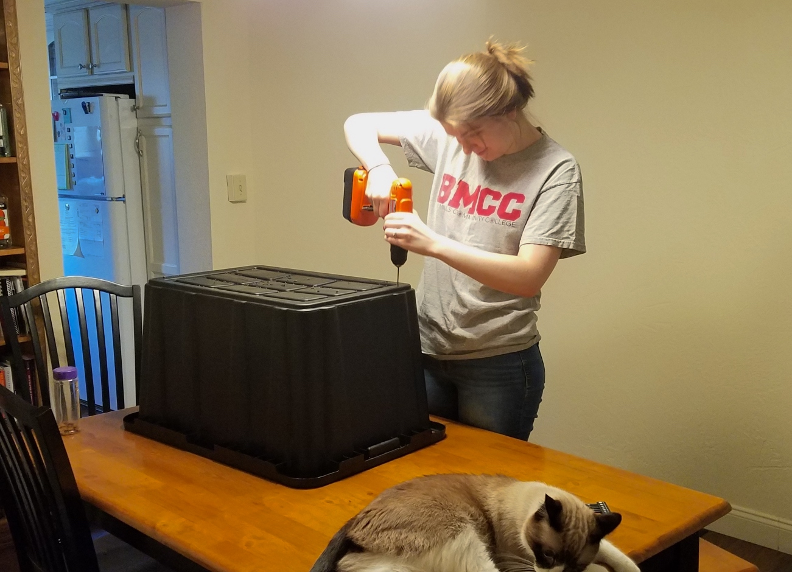

Projects
Welcome to our projects page! Here, we'd like to share some of the projects we're working on. We both like creating things (including this site) and are excited to show you some updates as we work on different ideas.
New Compost Bin
August 15, 2018
Since we moved we've been composting our food scraps. It started out as a way to avoid having a smelly trash in an apartment without a garbage disposal. More research revealed the environmental benefits of keeping food scraps out of landfills, so it's sort of a win-win. Our composing system has worked pretty well for the last several months but the pear tree in our backyard is giving it a run for its money. Our whole garden area is routinely carpeted in pears and pear bits thanks to some very hungry but selective squirrels. Enter our second bin. It's a little bigger than the first and was fairly easy to make.
Step 1: Obtain two large bins of the same size that nest together.
Step 2: Drill small holes in the bottom and sides of one of the bins (what I'm doing in the picture above).
Step 3: Stack the bins together to make sure there is enough room for airflow into the inner bin. If not, elevate the inner bin by placing something in the bottom bin. Make sure it's something you don't want to use again.
Step 4: Add your compost materials! Using a ratio of about 3 parts brown material (such as dry leaves, shredded paper or cardboard, or sawdust) to 1 part green material (green yard waste, food scraps, etc) start adding things to your compost bin. You can also add a little finished compost to help get the process started. Mix everything together and be sure not to pack the material too tightly to let lots of air to get in. Cover with a tight fitting lid to avoid visits from local wildlife.
Note: Remember not to add any oils or animal products to your compost bin. Egg shells are ok.
Sewing Practice!
July 24, 2018
There's a sort of long story as to how I got here. I picked up a new sewing machine on Amazon Prime Day after the old one I've had since childhood recently bit the dust. I haven't done much sewing in years and have wanted to get back into it (and get better). At the same time, many of our cleaning cloths are also starting to fall apart and need to be replaced. We have some old clothes that could be cut up into rags but they don't seem durable enough on their own. Enter my sewing plan--sew together a few layers of fabric with terrycloth in the middle, all created from old things we have around the house. So far, they are working out pretty well but I'm having some issues with fraying edges. Hope to fix that up in the next similar project I do.